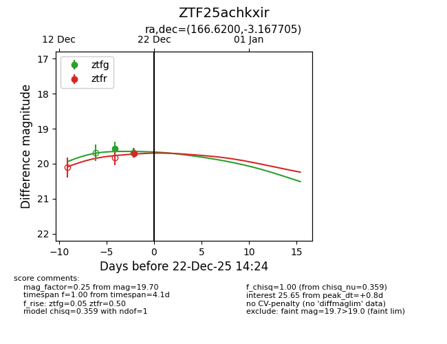
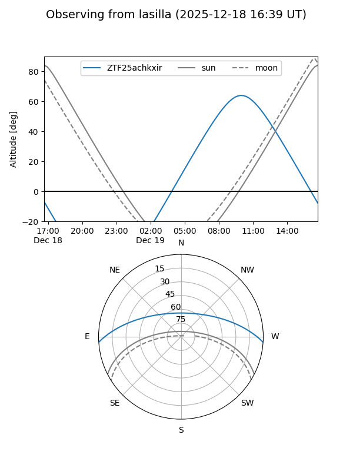
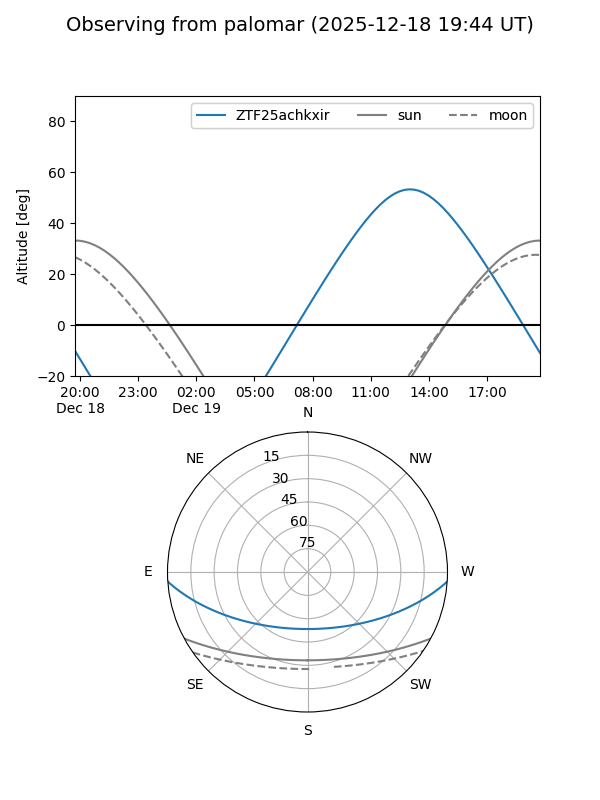

ZTF25achkxir
Target ZTF25achkxir at 2025-12-31 16:59
Aliases and brokers:
FINK:
Lasair:
ALeRCE:
alt names
ZTF25achkxir (ztf,fink_ztf)
Coordinates:
equatorial (ra, dec) = 166.6200,-3.16770
equatorial (HMS+DMS) = 11:06:28.81,-03:10:03.74
galactic (l, b) = (258.9581,+50.52136)
Flags:
Photometry:
last ztfg=19.68, ztfr=19.72
2 ztfg, 2 ztfr detections
Lightcurve

Visibility


Additional plots